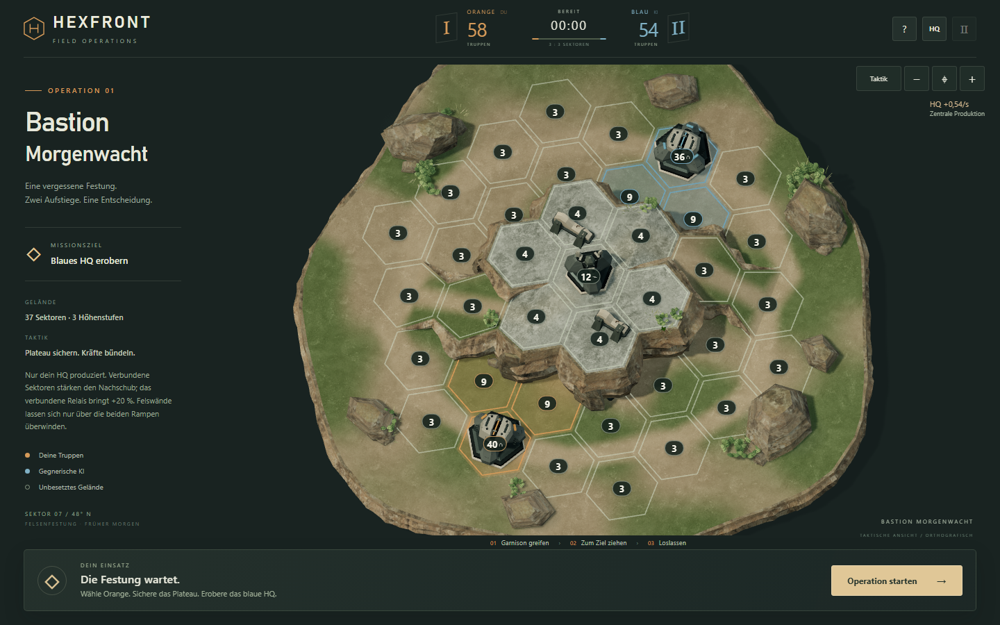
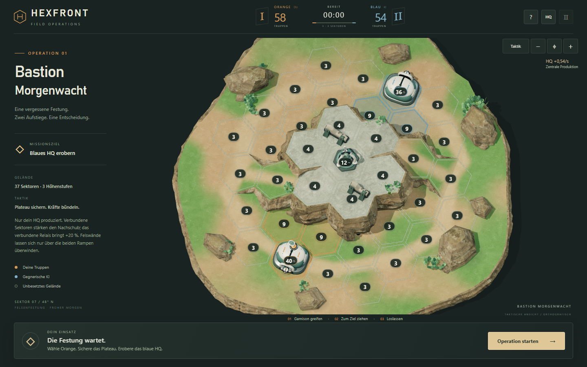
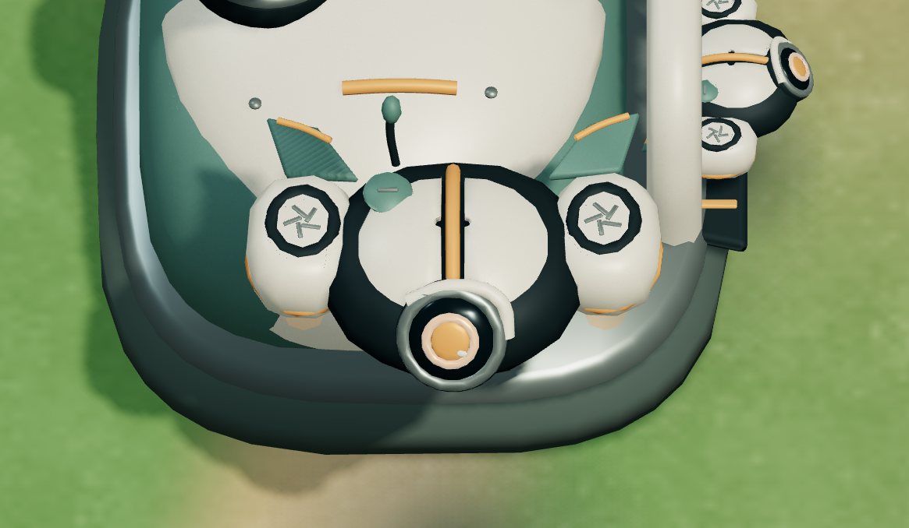
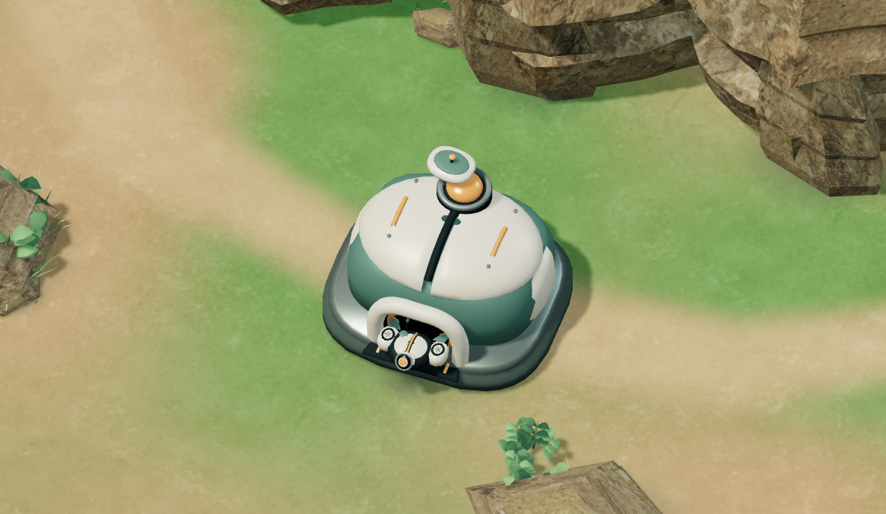
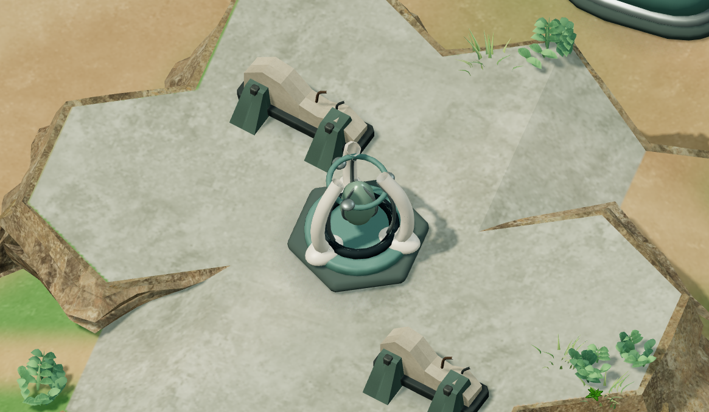
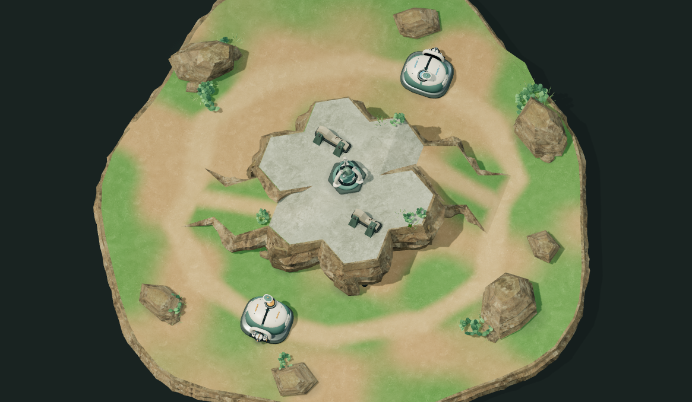

HEXFRONT / ART-STUDIE 03
Eine neue Familie aus Keramik, Jade und dunklem Metall. Die bestehende Einzelkarte, Wirtschaft, KI, Steuerung und taktische Kamera bleiben erhalten.
Beide Aufnahmen verwenden denselben unveränderten Startzustand und exakt dieselbe Kameramatrix. Der Schieber zeigt die frühere Gestaltung links und den neuen Stand rechts.


VorherCharming Frontier



Originale Blender-Modelle für HEXFRONT. Vorhandene Poly-Haven- und Quaternius-Umgebungsressourcen: CC0, siehe Asset-Lizenzen. Nahaufnahmen nutzen eine zusätzliche Testkamera; im Spiel bleiben die festen Ansichten 70° und 55°. Reale Smartphone-Performance und das Produktionsniveau von Tacticus werden nicht behauptet.